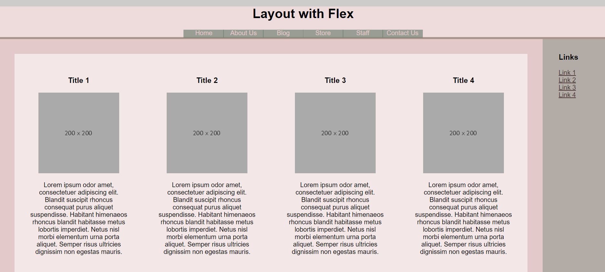
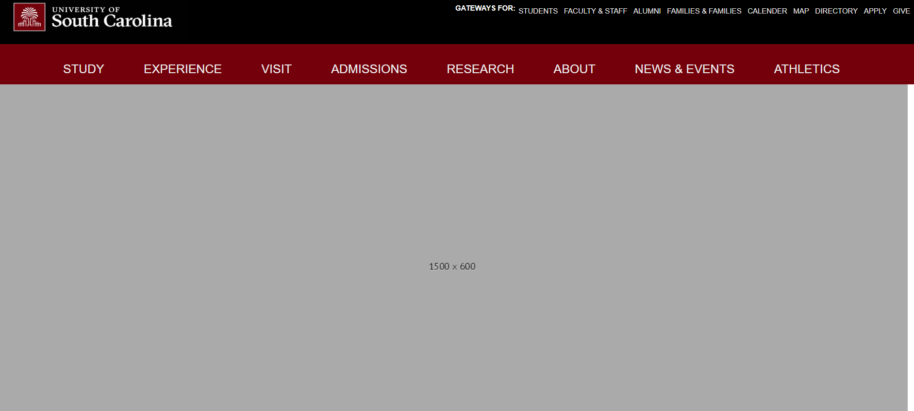
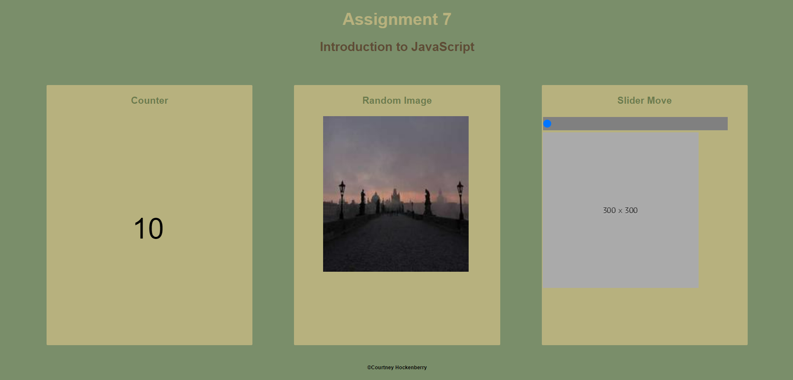

Courtney Hockenberry
CSCE 242: Client-Server Computing
In this class, we will learn how to create websites using HTML, CSS, and JavaScript. We will learn front end website design as well as back end. We will also learn how to create server side applications and work to have a more organized coding structure.
Assignments
Assignment 1 - Basic HTML

In this assignment we first learned how to create a website with functioning propterties. We reviewed basic html structures and inserting photos.
Assignment 2 - Basic CSS

This assignment was focused primarily on CSS and the usage of Flex box. This also focused on the use of the main elements, classes, and ID's.
Assignment 3 - Page Layout
For this assignment we created a template that matched the example given using important elements such as columns and flex box.
Assignment 4 - Recreate CSS Page
In this assignment we demonstrated our knowledge of html, css styling, and media query to rereate a more complicated website structure.
Assignment 5 - Introduction to JavaScript
Lorus ipsum fr bruh